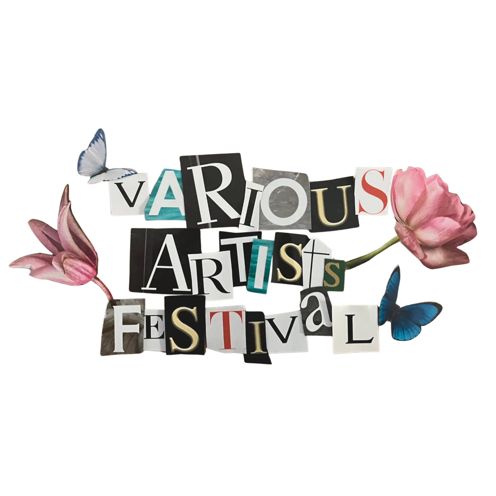
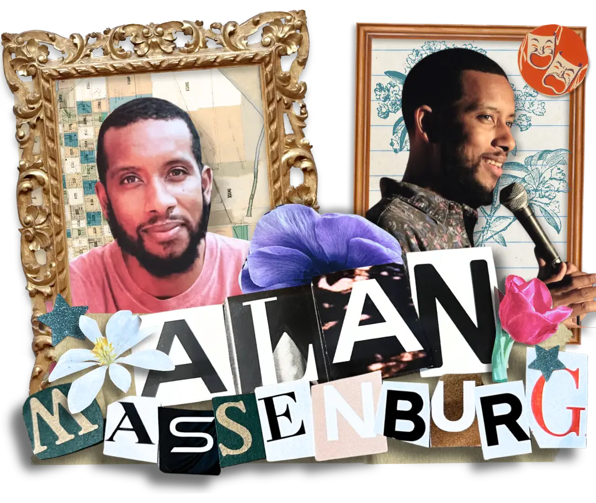

DATE
NOV 28, 2026
LOCATION
LANCASTER, PA
VENUE
WEST ART

Alan Massenburg is a comedian and actor from Philadelphia who's been making some big moves lately. He was a finalist in HBO's American Black Film Festival stand-up competition, has been a guest on The Drew Barrymore Show's Dad Joke segment, appeared on TMZ Live and SiriusXM's "Sway in the Morning," and has even performed at Harlem's iconic Apollo Theater.
Alan's debut comedy album "We Got Action" reached #1 on the iTunes charts, and despite his hate/hate relationship with TikTok, he's amassed over 10 million views and more than 30,000 followers across platforms.
We're thrilled to have Alan as our inaugural Comedy Headliner.
Music, comedy, and performances across West Art's historic building, including City Hall, The Sanctuary, Art Bar, and The Elbow Room.
From grand-scale energy to deep and personal basement vibes, the Various Artists Festival turns this old church into a multi-story experience of live music, comedy, and performance.
Wander through West Art with live music and shows with breathtaking visuals while discovering your new favorite artists.
Produced By
A Lancaster based booking and live production company founded in 2026 by Alex Hart. We're dedicated to spotlighting the incredible talent in our local creative scene.
Hosted At
816 Buchanan Ave in Lancaster, PA. A historic church transformed into a one of a kind venue for live music, performance, and visual art by co-founders Rufus Deakin and Josh Gibbel.